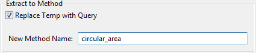

There is the option to replace the variable with a method "Replace Temp with Query". If this flag is set a method with the entered name is created containing the assigned value or expression which was the assignment value of the variable. Subsequently method calls replace the usage of the local variable.| Option | Description |
|---|---|
| Replace Temp with Query | Flag for activating the replacement of the variable with a method definition and the subsequently needed method calls. |
| New Method Name | The name of the new method created when the "Replace Temp with Query" flag is set. |